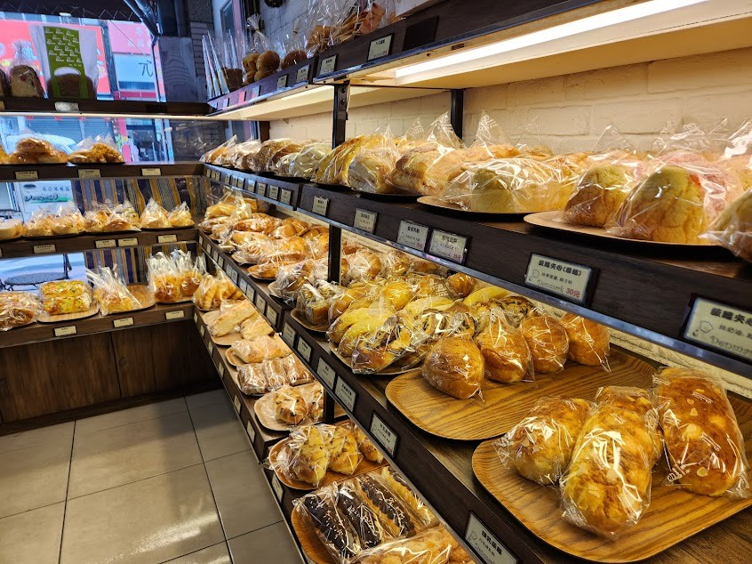
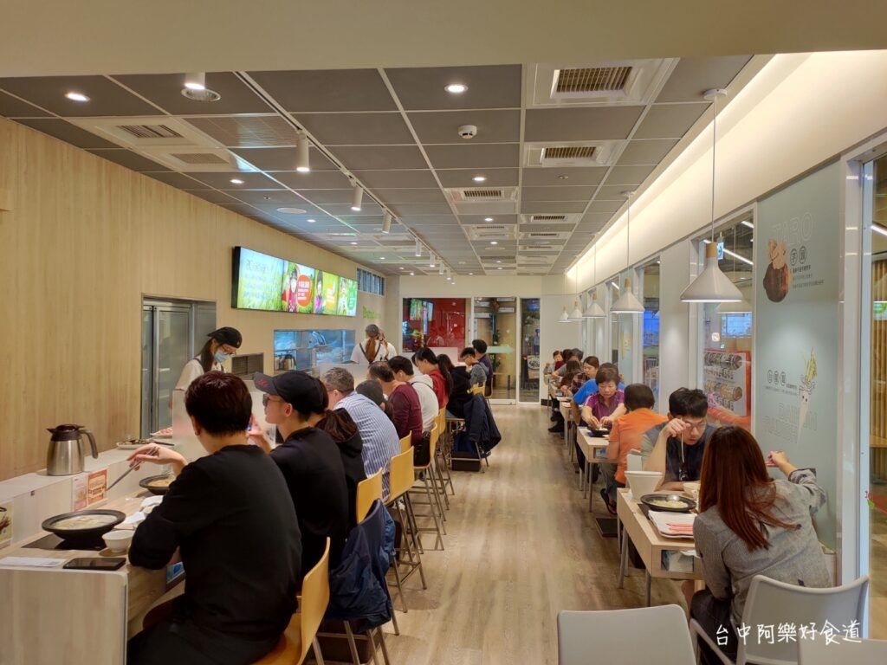

教育經歷
屏東市仁愛國小 | 屏東市至正國中 | 屏東市屏東高中
大學: 中原大學 | 系所: 資訊管理學系
程式能力
- 實修程式: Python, Java, HTML, CSS
工作經歷
屏東市丹麥烘培房 | 外場服務員
2019-2020
- 負責將麵包裝進塑膠袋
- 用土司機切吐司
- 包裝生日蛋糕

石二鍋中壢榮民店
2023/8/1-2023/8/21
- 負責送餐
- 清理餐桌
- 大喊: 歡迎光臨石二鍋~來點新鮮的~
- 掃廁所

大學及未來展望
我目前在中原大學資訊管理學系就讀，專注於學習程式設計、數據分析等領域，雖然目前還沒有對未來的明確目標，但會要求自己在畢業前積極學習並且嘗試接觸該科系相關的各種知識及專業科目
再來大學四年我會期許自己能夠考取相關的執照已面對未來的就業問題，同時也希望自己能好好體驗大學生活，在能享受生活及玩樂的同時不翹課並且維持好自己在系上的排名
最後除了課業外我也希望在自己喜歡的興趣能夠在未來畢業前有好的成績，且也會嘗試能否往這方面發展。
聯絡方式
電子郵件: jimmybasketball2005@gmail.com
電話: 0921120650
Line id:0921120650
ig: qin_02_03
興趣
- 運動：打籃球, 健身, 游泳, 羽毛球, 排球
- 旅行：以遊歷台灣本島，北至富貴角，南至鵝鑾鼻
- 閱讀：我喜歡閱讀科技書籍和科幻小說，已精進我的程式語言。
大學活動
- 大學新生訓練 2023/9/3
- 資管乙班班聚10/30
- 資管之夜2023/12/2
- 永安漁港流星雨2023/12/15
- 資管跨年2023/12/31
- 資管系籃 大資盃2023/2/1-2/2
- 資管台南行2024/2/4-2/6
- 北投泡湯2024/2/28
- 力行宿舍退宿2024/6/20
- 資管澎湖行2024/6/24-6/27